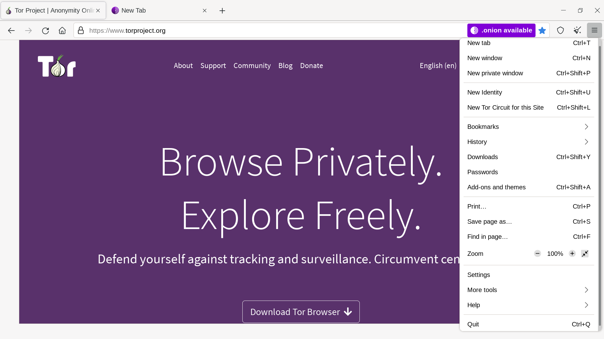

Когда вы подключаетесь к сайту, информацию о посещении могут записать не только его администраторы. Большинство сайтов использует многочисленные сторонние сервисы, включая кнопки "лайков" в социальных сетях, аналитику и рекламу. Все они могут определять связь между вашими действиями на разных сайтах.
Использование сети Tor не дает наблюдателям узнать ваши точное местоположение и IP-адрес. Но даже без этой информации можно установить связь между разными областями вашей деятельности. Tor Browser дает возможность контролировать то, какую информацию можно связать с вами.
АДРЕСНАЯ СТРОКА
Tor Browser фокусируется на сайте, чей адрес виден в адресной строке. Даже если вы соединились с двумя разными сайтами, использующими один и тот же сторонний сервис, Tor Browser подключится к нему через разные цепочки Tor. Со стороны не будет видно, что оба подключения сделаны из вашего браузера.
С другой стороны, все подключения к одному и тому же сайту производятся через одну цепочку Tor. Вы можете смотреть разные страницы одного сайта в разных вкладках или окнах без потери функциональности.

Увидеть, какую цепочку Tor Browser использует для текущей вкладки, можно в информации о сайте в адресной строке.
Первым узлом в цепи является входной, или сторожевой узел, который автоматически и случайно выбирается Tor. Но он отличается от других узлов в цепи. Чтобы избежать профилирующих атак, сторожевой узел меняется только через 2-3 месяца, в отличие от других узлов, которые меняются с каждым новым доменом. Более подробную информацию о Guard можно найти в FAQ и на Портале Поддержки.
ВХОД В TOR
Tor Browser разрабатывался для обеспечения полной анонимности пользователя в сети. Но Tor бывает полезен и для сайтов, идентифицирующих пользователя (имена пользователей, пароли, другие данные).
Если вы зашли на сайт в обычном браузере и авторизовались, вы сделали доступными свой IP-адрес и географическое положение. То же самое часто происходит при отправке электронной почты. В чем же смысл использования Tor Browser при авторизация с помощью вашей учетной записи в социальной сети или email? Вы можете выбирать, какую конкретно информацию делаеть доступной сайтам, которые вы просматриваете. Авторизация с использованием Tor Browser также полезна, если сайт, к которому вы пытаетесь подключиться, заблокирован в вашей сети.
Когда авторизуетесь на сайте, используя Tor, есть несколько важных моментов:
- См. страницу Безопасные соединения для получения важной информации о том, как защитить соединение при входе в систему.
- Благодаря Tor Browser ваше подключение часто выглядит так, будто сделано из другой точки планеты. Некоторые сайты, такие как банки или сервисы электронной почты, могут посчитать это за признак взлома (или компрометации) аккаунта и заблокировать вас. Единственный способ решить проблему — следовать рекомендациям сайта для восстановления аккаунта. Возможно, придется связаться с владельцами и объяснить ситуацию.
ИЗМЕНЕНИЕ ЛИЧНОСТИ И ЦЕПОЧЕК

В Tor Browser есть опции «Новый личность» и «Новая цепочка Tor для этого сайта». Они также находятся в главном меню.
НОВАЯ ЛИЧНОСТЬ
Полезно, если вы хотите разорвать связь между вашими предыдущими и последующими действиями. Будут закрыты все окна и вкладки, удалены все личные данные (например, куки-файлы и история посещений страниц), построены новые цепочки Tor. Учтите: при создании "новой личности" все действия на сайтах и все загрузки будут остановлены. Tor Browser предупредит вас об этом.
Чтобы использовать эту опцию, вам просто нужно нажать «Новая личность» на панели инструментов Tor Browser.
НОВАЯ ЦЕПЬ TOR ДЛЯ ДАННОГО САЙТА
Эта опция полезна, если используемое вами выходное реле не может подключиться к нужному сайту или загружает его неправильно. При выборе этой опции активная в данный момент вкладка или окно будут перезагружены по новой схеме Tor. Другие открытые вкладки и окна того же сайта после перезагрузки также будут использовать новую схему. Эта опция не очищает приватную информацию и не развязывает ваши действия, а также не влияет на текущие соединения с другими веб-сайтами.
Сменить цепочку также можно, щелкнув по значку "(i)" в адресной строке браузера.